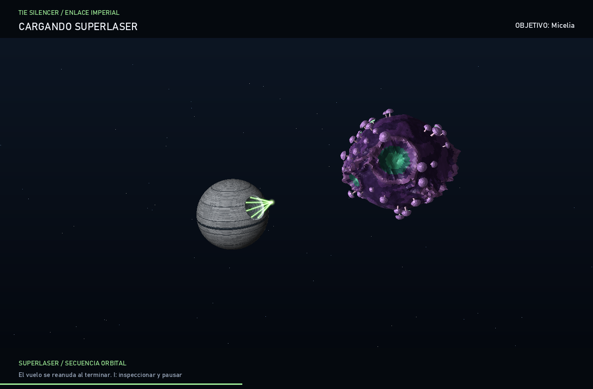

TIE SILENCER / NUEVA HABILIDAD
Un planeta en la mira.
Apunta la proa a un planeta y pulsa R. La Estrella de la Muerte llega, carga su superláser y dispara contra el objetivo.
Malla 3D original con trinchera ecuatorial, paneles de blindaje y antena cóncava. Ocho haces convergen antes del disparo.
De la llamada al impacto
CAPTURAS REALES / MOTOR RUST
Mueve el control o usa las flechas del teclado para recorrer la secuencia. Son capturas de la misma simulación que ejecuta el juego; puedes observarlas a tu ritmo.
Cómo llamar a la estación
EXCLUSIVO DE TIE SILENCER- Selecciona TIE Silencer en el hangar o pulsa 2 durante el vuelo.
- Orienta la nave hasta que el HUD muestre el nombre del planeta como objetivo.
- Pulsa R. La secuencia dura 11 segundos; la recarga dura 22 segundos desde la llamada.
Solo admite planetas con la línea de tiro despejada. Los soles y los objetivos ocultos quedan excluidos. Durante la secuencia el vuelo queda en espera; I permite inspeccionar y pausar, y Esc abandona la secuencia.
Tras el impacto desaparecen el planeta, su atmósfera, su gravedad y sus colisiones. En Umbriel también desaparecen los anillos. La destrucción se conserva al reaparecer y cambiar de nave, hasta cargar otra galaxia.
JUGAR EN ESCRITORIO
Toma los controles.
Ejecuta el proyecto y elige TIE Silencer.
cargo run --releaseESTA PÁGINA ES UNA VISTA PREVIA DEL JUEGO PARA ESCRITORIO.